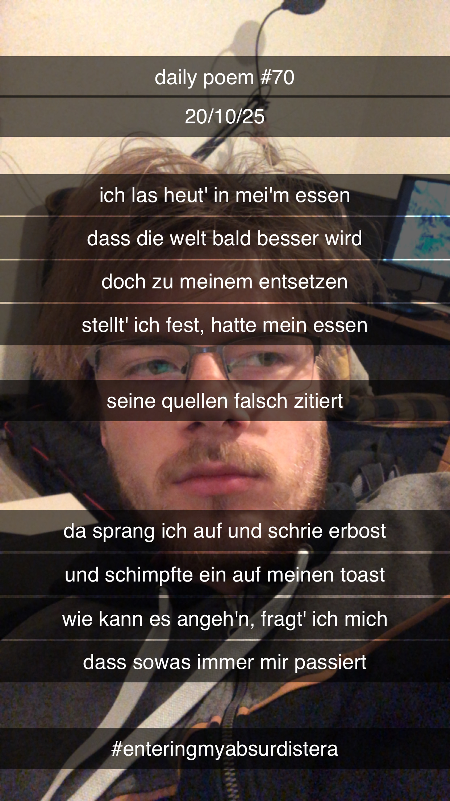

Falschmeldung im Frühstück
Ich las heut' in mei'm Essen,
Dass die Welt bald besser wird.
Doch zu meinem Entsetzen,
Stellt' ich fest, hatte mein Essen
Seine Quellen falsch zitiert.
Da sprang ich auf, und schrie erbost,
Und schimpfte ein auf meinen Toast;
Wie kann es angeh'n, fragt' ich mich,
Dass sowas immer mir passiert?
